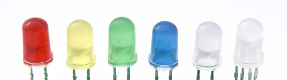
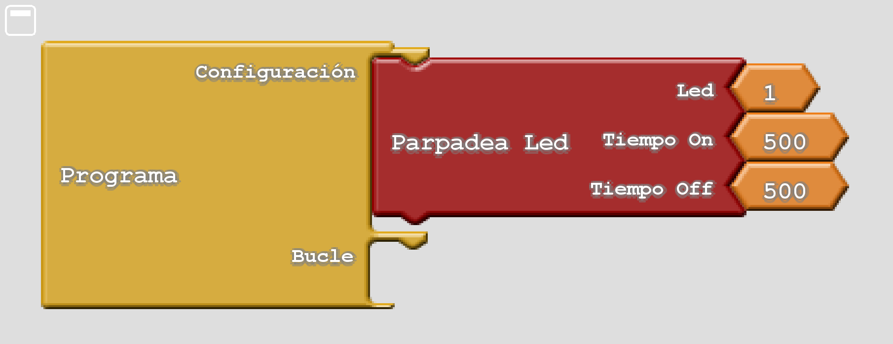

4. Parpelleig LED¶
{kind=link}

Els pendents¶
- Generar parpelleig de LED mitjançant la funció LEDBLINK.
La funció: CPP: Fun: `ledblink '¶
-
ledBlink(int ledNum, int time_on, int time_off)¶ Aquesta funció parpelleja un LED amb una certa cadència. Els seus paràmetres són els següents:
`` lednum``: LED que parpellejarà. Els valors vàlids oscil·len entre 1 per LED D1 a 8 per al color blau del LED D6.
El LED D6 és un LED RGB, que integra 3 LEDs al seu interior. Els números 6, 7, 8 representen respectivament els colors vermells, verds i blaus del LED D6.
`` Temps_on ': temps, en mil·lèsimes de segon, que el LED ha de romandre en marxa. Si aquest paràmetre val zero, el LED romandrà en tot el temps.
`` Temps_off``: temps, en mil·lèsimes de segon, que el LED ha de romandre fora.
Nota
Cada vegada que s’executa la funció: CPP: FUN: LEDBLINK, el LED comença la il·luminació del cicle al llarg del temps` TIME_ON``. Es pot utilitzar per sincronitzar l’inici del parpelleig d’un LED. Si la funció: CPP: Fun: ledblink s’executa repetidament cada poc temps, el LED es mantindrà tot el temps, ja que el seu temps es reinicia una i altra vegada.
LED D1 Flash¶
En aquest exemple, voleu parpellejar a la LED D1 amb un temps a mig segon i un temps de mig segon. Per tant, el període parpelleig serà de segon. En aquest cas, la funció es donarà a la `` configuració () `` `` `` `
1 2 3 4 5 6 7 8 9 10 11 12 13 14 | // Parpadea el led D1 una vez por segundo
#include <Wire.h>
#include <PC42.h>
void setup() {
pc.begin(); // Inicializar el módulo PC42
pc.ledBlink(1, 500, 500); // Parpadea el led D1
// 500 milésimas de segundo encendido
// 500 milésimas de segundo apagado
}
void loop() {
}
|
Programa equivalent a l’entorn Arcublock:
{kind=link}

En aquest enllaç podeu descarregar: Descarregueu: Fitxer de programa per a Arcublock 'Ledblink' <_downloads/ardublock_ledblink.abp> `
Exercicis¶
Programa el codi necessari per resoldre els problemes següents.
Flash el LED D1 i el LED D4 amb un temps d’encesa mig segon i mig segon de temps. Els dos LED s’han d’encendre i desactivar alhora. Utilitzeu la funció: CPP: Fun: ledblink.
Modifiqueu l'exercici anterior de manera que l'encesa dels dos LED D1 i D4 sigui alternativa, de manera que només un LED està en tot moment. El temps d’encesa de cada LED serà mig segon.
Feu que dos LED flaixin alhora amb una freqüència de segon. El LED D1 es programarà amb el `` ledblink (1, 500, 500) ``, al contrari, el LED D3 es programarà amb el codi següent.
1 2 3 4 5 6
void loop() { pc.ledWrite(3, LED_ON); // Encender el led D3 delay(500); // Esperar medio segundo (500 ms) pc.ledWrite(3, LED_OFF); // Apagar el led D3 delay(500); // Esperar medio segundo (500 ms) }
Heu d’intentar sincronitzar els dos LED per parpellejar alhora ajustant els temps d’encesa modificant el temps de la funció `` de retard (500) `.
Corregiu els errors sintàctics del programa següent per fer -lo funcionar correctament.
1 2 3 4 5 6 7 8 9 10 11 12 13 14 15 16 17 18 19 20 21 22 23 24 25 26 27 28
// Programa con errores sintácticos. // Luces de Navidad. #include <Wire.h> #include <PC42.h> void setup() { int time_on; // Declara la variable time_on como un número entero int time_off; // Declara la variable time_off como un número entero pc.begin(); // Inicializar el módulo PC42 // Repite y asigna valores a variable 'num' desde 1 hasta 5 for(int num=1; num<=5; num++) { // Tiempo encendido = aleatorio entre 0,5 y 3,0 segundos time_on = random(500, 3000) // Tiempo apagado = aleatorio entre 0,5 y 3,0 segundos time_off = Random(500, 3000) // Parpadea el led 'num' un tiempo aleatorio pc.ledblink(num, time_on, time_off) } void loop() { }
Feu un flaix LED d’una manera que s’encengui durant dues dècimes de segon cada deu segons, per indicar que el mòdul funciona gastant molt poca energia.
Feu un flaix LED d’una manera que s’encengui durant dues dècimes de segon, cada segon.
Els primers sis LED s’han d’encendre en seqüència de manera que el LED D1 s’encengui i acabi en el LED D6. Entre l’encesa d’un LED i el següent ha de passar entre 250 i 500 mil·lèsimes de segon. Un cop s’encenguin tots els LED, començaran a sortir pel LED D1 fins que tothom estigui apagat. Nota: Per solucionar aquest problema, només s'ha d'utilitzar una funció: CPP: Fun: LedBlink per a cada LED, juntament amb la funció de retard ()` per esperar un temps entre una ignició i la següent.